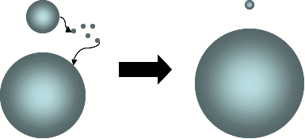
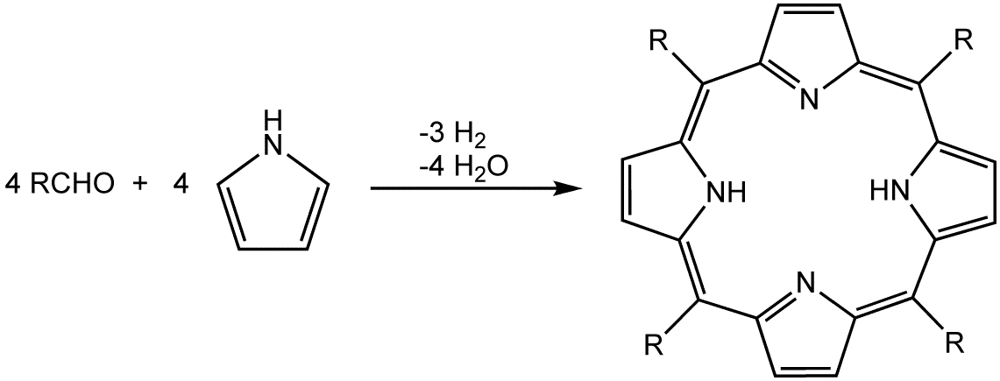

Einführung
- mindestens eine Dimension kleiner als 100nm
- Herstellungsverfahren:
- Top-Down-Verfahren
- Bottom-Up-Verfahren
- Volumeneffekt,
Bohrsche Atommodell. Die Energiezustände sind diskret und wohl definiert. - Halbleiter-NP—>unterschidliche Fluorszenzlicht
- Gold-NP von etwa 3nm als oder eater (Geruchsfresser)
- Aerosile (SiO2) und TiO2
- bei der Herstellung von nanoskaligem TiO2 der frühere Flüssigphasenprozess (Sulfat-Prozess) oft durch einen Gasphasenprozess (Chlorid-Prozess) ersetzt.
- Im Bereich Farben und Lacke werden NP als Yinkoxid und Titandioxid seit mehr als 30 Jahren eingesetzt.
- Geschicht:
- 1959 Richard Feynman, amerikanisch theoretischer Physiker, Nobelpreisträger
- 1974 Der Japaner Taniguchi
- CNT:
- Leitbeständigkeit: 1000 mal mehr Strom leiten als Kupfer
- wärmebeständig
- als Display, eine Seite Spannung anlegen, als Elektronenrühren verwenden lassen, kalte Elektronenrühren, die man sehr Punkt genau auf Oberflächen aufbringen kann. 精确识别手指触摸
Metall-NP
- traditionelle Methoden zur Herstellung von elektronischen Schaltungen:
- Siebdruck
- Fotolithographie
- Galvanisieren
basieren auf selektivem Abdecken und Ätzen
- Tintenstrahldrucker: Ausstoß von kleinsten Tröpfchen füssiger Tinte mittels eines Piezokristalls.
Ag-NP-Tintensind für druckbare Elektronik geeignet.
Herstellung Ag-NP-Tinten:- durch Reduktion eines Silberdiamin(银二胺)-Komplexes durch D-Glukose(葡萄糖) in Anwesenheit eines Dispergiermittels [Balantrapu et al., Clarkson University, 2008]
Nanoröhrenin Schaltungen und Displays, als Bauteil für flache und selbstleuchtende Feldemissionsbildschirme: Dabei dienen die scharfen Spitzen der Nanoröhren als Quelle für Elektronen durch Feldemission(场致发射) (winzige Elektronenkanone, Kaltkathode schon bei relativ geringen Spannungen)Graphen-Nanonetze, 200 Mal fester als Stahl, leitet den elektrischen Strom besser als alle bisher bekannten Materialien.
Herstellung:- Isolierung kleiner Monilafenflecken durch Abziehen von Lagen von Graphit
- durch Heizen eines Silizium-Wafers im Vakuum, wobei das Silizium verdampfte und eine Kohlenstoffschicht zurückließ
- CVD-Prozess: Graphen wird über die Zersetzung von heißen Kohlenwasserstoffgasen an einer reaktiven Metalloberflächen gebildet. Darauf wird ein Kunststofffilm aufgedrückt und das Metall wid mit einer Säure weggeätzt.
- chemische Methoden: Graphit lässt sich leicht durch Säure oxidieren, so dass sich isolierende Grapphenoxidschichten bilden, die sich in Wasser trennen. Danach Reduktionsmittel wie Hydrazin geben. Leider führt die Methode zu eher porösen Filmen.
- in Lösungen mittels Ultraschall
- in spezielle Lösungsmittel wie ionische Flüssigkeiten
- CNTs mittels AFM aufgeschlitzt(aufschlitzen撕开), um Graphenschichten zu erhalten
- xxx
NP in der Energiepproduktion
- Titandioxid ist ein n-Halbleiter, n-Halbleiter类比掺杂了Phosphor,体系内多电子，p-Halbleiter类似掺杂了Bor，体系少电子。
- 影响Wirkungsgrad der Solarzellen的几个因素：
- Breite des adsorb Spektrums
- Ausnetzen aller Photonen
- Geometrie der Solarzellen, eigentlich Geometrie der Elektrode, Beschicchtung von Halbleiter und Stromsammler.
- Mesoporöse Festkörper [meso (griechisch) = dazwischen, mittig] sind nach IUPAC-Definition poröse Materialien mit Porendurchmesser zwischen 2 nm und 50 nm.
- Core-Shell-Partikel
- Die Mechanismus für den Verlust an Pt-ECSA:
- $C + H_2O \xrightarrow{} CO_2 + 4H^+ + 4e^-$
- Ostwald-Reifung [1]">
- Gibbs-Thomson-Effekt: Die Löslichkeit nimmt mit abnehmender Partikelgröße zu!
- Zwei Punkte, an denen intensiv geforscht wird, sind die Reduktion der Menge an teurem Pt entweder durch höhere Effizienz der Pt-NP oder durch Ersatzmaterialien und die Degradation des Graphitträgers mit der Betriebsdauer, speziell bei den An- und Abfahrprozessen (instationärer Betrieb) der BZ.
![Example chemical structure of coal<sup>[2]</sup>](Struktura_chemiczna_węgla_kamiennego.svg)
- Turn Over Frequency (TOF): Dabei wird die Anzahl der Produktmoleküle pro Zeit auf die verfügbare Katalysatoroberfläche bezogen (genauer auf die „aktiven“ Zentren).
NP für Beschichtungen
- Bariumsulfat(硫酸钡) und Eisenoxid als farebgebende Pigmente oder pyrogene(火成的，焦化の，热解的) Kieselsäuren(硅酸，$H_2SiO_3$, silicic acid) zur Beeinflussung der Fließfähigkeit
- Holzlasuren 木釉
- Petal-Effekt & Lotus-Effekt
- Diese hierarchische Mikrometer-Nanometer-Rauigkeit ist die typische Struktur für superhydrophobe Oberflächen.
- NP + 4.5ml Ethanol + 0.5ml Trimethylsiloxysilicat(TMSS)/Cyclopentasiloxan
Nanodrähte
- Template-assistierte Synthese (TAS)
- anodisches Aluminiuoxid: anodische Oxidation von Al-Filmen in saurer Elektrolyt-Lösung, Al-Plättchen mechanisch und elektrochemisch poliert, Die Poren enstehen infolge von zwei gekoppelten Prozessen, nämlich der
Porenbildungund derPorenanordnung. - Ionenbeschuss, track-etching method, Polymer-Membranen mit näherungsweise zylindrische Poren/einkristalline Glimmerfilme Poren mit diamant-förmigem Querschnitt, die entlang der Ionenspur spitz zulaufen.
- Nanokanalglas
- Druckeinspritzen
- elektrochemische Deposition
- Dampfdeposition
- Vapor-Liquid-Solid(VLS)-Wachstum
- anodisches Aluminiuoxid: anodische Oxidation von Al-Filmen in saurer Elektrolyt-Lösung, Al-Plättchen mechanisch und elektrochemisch poliert, Die Poren enstehen infolge von zwei gekoppelten Prozessen, nämlich der
- Thermoelektrische Eigenschaften von ND
- Seebeck-Effekt
- Peltier-Effektes
- $ZT = S^2σT/(κ_e+κ_L)$
- Die Leistung thermoelektrischer Materialien wird durch die so genannte Gütezahl ZT (figure-of-merit) dargestellt
- P25 ist ein kommerzieller Photokatalysator (TiO2)
- Ag/ZnO ND, g wirkt als Elektronenfänger und verbessert die Trennung von Elektron-Loch-Paaren
Katalyse
Composite
NP im Alltag
Abkürzung Zusammenfassungen
| Abkürzung | Völlständigen |
|---|---|
| FE-REM | Feldemitter-Rasterelektronenmikroskop |
| CNT | Carbon Nanotube |
| MOSFET | Metal Oxide Semiconductor Field Effect Transistor |
| CNTFET | Kohlenstoff-Nanoröhren-Feldeffekttransistor |
| SRAM-Geschwindigkeit | Static Random Access Memory |
| HOPG | Highly Oriented Graphitic Carbon |
| MWCNT | Multi Wall CNT |
| SWCNT | Single Wall CNT |
| WW | Wechselwirkung |
| HNP | Halbleiter-NP |
| ITO | Indium Tin Oxide: leitend&transparent |
| OPV | Organische Solarzellen |
| DSC | dye Sensitized Cell - Farbstoffzelle - Grätzel-Zellen |
| NQDs | Nanokristalline Quantum Dots |
| FTO | engl=Fluorine doped（掺杂的） Tin Oxide, dt=Fluor-dotiertes Zinndioxid, SnO2 |
| TCO-Glas | Transparent Conductive Oxide |
| PES | Photoelektrochemische Solarzellen |
| PC | Photonische Kristalle |
| PS | Photonische Schwämme |
| Pt-ECSA | Pt-Elektrochemical Surface Area |
| RHE | reversible hydrogen Electrode |
| TOF | Turn Over Frequency |
| BB | Biulding Blocks |
| SPR | Surface Plasmon Resonance |
Chemikalien
- Porphyrin: 卟啉(bulin) 
- Hydrazin: N2H4)
- Pd: Palladium, 钯
- Ru: Ruthenium, 钌(liǎo)
- PPA: Poly Phosphoric Acid
- PAA Poly Acrylic(丙烯酸) Acid
- das Tellur，碲，der Tellurid，碲化物
- das Antimon, 锑
Vokabeln
|der Wafer |die Waffel |die Waffe
|:—-:|:—-:|:—-:
|晶片；晶圆|华夫饼干|武器transparen||durchsichtig
- das Iod 碘; der Iodid 碘化物
- Alkan, -e, 烷烃; Olefin, -e 烯烃
- fiancée: 未婚妻
- der Glimmer, 云母
- autark, 自给自足的
- whenever y’all break up
Anwendungen nanoskaliger Pulver, Skriptum SS2018, Prof. Dr. Alfred Weber, Institut für Mechanische Verfahrenstechnik, Teschnische Universität Clausthal